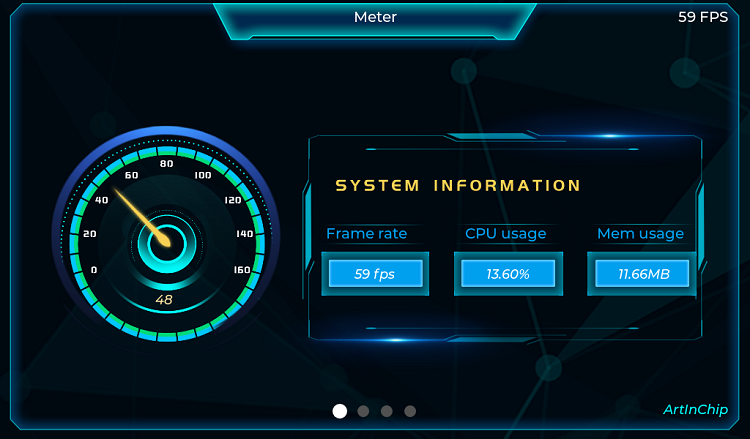
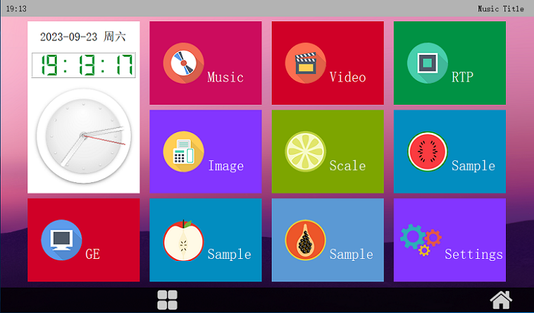

Demo
12 Nov 2024
Read time: 2 minute(s)
LVGL 编译
如果要运行 LVGL demo：
- 在 Luban 系统通过 make m 命令打开 Luban
配置界面：
ArtInChip packages Sample code [*] test-lvgl --->打开
test-lvgl后需要的三方库会自动加载和编译。 - 选择以下任意方式运行下列不同的脚本：
-
自动运行：脚本为 /etc/init.d/S00lvgl
-
手动运行：脚本为 /usr/local/bin/test_lvgl
界面示例

test-lvgl默认的 UI 界面为 1024x600，不会自适应屏幕大小test-lvgl默认需要双 buffer，因此需要在 board.dts 中按高度 x 2 配置高度：&fb0 { height-virtual = <1200>; //600 x 2 port { fb0_out: endpoint { remote-endpoint = <&de0_in>; }; }; };
-
QT 编译
如需运行 QT demo，按照以下流程执行：
- 在 Luban 系统通过 make m 命令打开 Luban
配置界面：
ArtInChip packages Launchers [*] qtlauncher ---> [*] use GE to render image (NEW) [*] small memory device (NEW)需要的三方库如 QT 会自动加载和编译。
-
-
自动运行：脚本为 /etc/init.d/S99qtlauncher
-
手工运行：
export LD_LIBRARY_PATH=/usr/local/lib:$LD_LIBRARY_PATH export TSLIB_FBDEVICE=/dev/fb0 export POINTERCAL_CALIBFILE=/etc/pointercal export TSLIB_CONSOLEDEVICE=none export TSLIB_TSDEVICE=/dev/input/event0 export TSLIB_PLUGINDIR=/usr/lib/ts export QWS_MOUSE_PROTO=tslib:/dev/input/event0 /usr/local/launcher/qtlauncher -qws
界面示例

注：qtlancher 应用比较大，因此需要调整 root 分区到 64M， 参考 存储配置。
-
Samples
为了方便使用，Luban 开发了一些模块的使用示例，可以通过 make m 命令打开 Luban
配置界面进行设置：
ArtInChip packages
Sample code
[*] test-adc
[*] test-mtop
[*] test-ce
[*] test-dma-buf
[ ] test-dvp
[*] test-fb
[*] test-lvgl
[*] test-touchscreen
[*] test-uart
[*] test-watchdog
[ ] test-libmad
[*] test-clock
[*] test-keyadc
[*] reg-dump
[*] test-gpio
[*] test-can
[*] test-eth
[*] test-audio